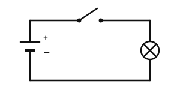
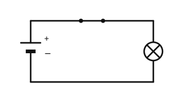

Der Schalter
Mit einem KI-Tutor lernen
Ein KI-Tutor erklärt dir diese Seite und hilft dir bei den Übungen. Wähl deinen Assistenten:
Mit Claude öffnen Mit ChatGPT öffnen Mit Mistral Vibe öffnen
Du nutzt dein eigenes Konto beim Anbieter. Der Assistent ist kein Angebot von lernapps.net: lernapps liefert nur Inhalte und Übungen. Die Wahl gilt für alle Seiten, nur auf diesem Gerät.
Licht an, Licht aus
Du drückst den Lichtschalter, und das Licht geht an. Du weißt schon: Eine Lampe leuchtet nur in einem geschlossenen Stromkreis. Ein Schalter ist eine Stelle, an der man den Kreis absichtlich öffnen und wieder schließen kann.
Danach kannst du erklären, wie ein Schalter einen Stromkreis öffnet und schließt.
Der Schalter öffnet und schließt den Weg
Die beiden Zeichnungen zeigen denselben Stromkreis mit einem Schalter im oberen Kabel. Der Schalter besteht aus zwei Kontakten aus Metall und einem beweglichen Metallstück. Die dicken Punkte sind die Kontakte. Das bewegliche Metallstück ist die Klinge. Schau, wo die Klinge liegt.

Schalter offen. Zwischen Klinge und rechtem Kontakt ist eine Lücke.
Quelle: eigene Zeichnung. Lizenz: CC-BY-4.0.
Schalter geschlossen. Die Klinge verbindet beide Kontakte.
Quelle: eigene Zeichnung. Lizenz: CC-BY-4.0.Bei offenem Schalter ist der Weg unterbrochen: Es fließt kein Strom, die Lampe ist aus. Bei geschlossenem Schalter leitet die Klinge den Strom von Kontakt zu Kontakt, der Kreis ist geschlossen und die Lampe leuchtet. Die Klinge ist aus Metall, also aus einem Leiter.
Der Schalter wirkt im ganzen Kreis
Manche denken: „Der Schalter schaltet nur die Lampe direkt hinter ihm.“ Das stimmt nicht. Der Stromkreis ist ein einziger Weg. Ist er an einer Stelle unterbrochen, fließt nirgends Strom. Es ist egal, ob der Schalter vor oder hinter der Lampe liegt.
Beispiel: Die Taschenlampe
Was beim Einschalten einer Taschenlampe geschieht
- Im Ausgangszustand ist der Schalter offen: Zwischen zwei Metallteilen ist eine Lücke. Der Kreis ist unterbrochen, die Lampe bleibt dunkel.
- Du schiebst den Schalter an. Dabei wird ein Metallstück bewegt, bis es beide Kontakte berührt.
- Nun ist der Weg von der Batterie durch die Lampe und zurück geschlossen. Die Lampe leuchtet.
- Schiebst du den Schalter zurück, entsteht die Lücke wieder, und die Lampe geht aus.
Übung
Übung
Lösung
Schaltplan A richtige Antwort
Der Schalter ist geschlossen, die Klinge verbindet beide Kontakte. Der Weg ist ohne Lücke.
Schaltplan B
Hier ist der Schalter offen. Zwischen Klinge und Kontakt ist eine Lücke, also fließt kein Strom.
Schaltplan C
Einer der beiden Schalter ist offen. Eine einzige Lücke genügt, damit im ganzen Kreis kein Strom fließt.
Die Lampe leuchtet nur, wenn jeder Schalter im Kreis geschlossen ist.
Mehr dazu:
Übung
Lösung
Richtige Antwort: Die Aussage stimmt nicht.
Der Stromkreis ist ein einziger Weg. Öffnet der Schalter ihn an irgendeiner Stelle, fließt im ganzen Kreis kein Strom.
Mehr dazu:
Übung
Lösung
Der Weg des Stroms ist an der Lücke im Schalter unterbrochen. richtige Antwort
Ohne geschlossenen Weg fließt kein Strom, darum kann die Lampe nicht leuchten.
Die Batterie gibt bei offenem Schalter keinen Strom ab, obwohl der Weg frei ist.
Es liegt am Weg, nicht an der Batterie. Schließt du den Schalter, leuchtet die Lampe mit derselben Batterie.
Der Strom wartet in der Lampe, bis der Schalter geschlossen wird.
Strom kann nicht in der Lampe warten. Er fließt nur, wenn der ganze Weg geschlossen ist.
Der offene Schalter unterbricht den Weg. Ohne geschlossenen Kreis fließt kein Strom.
Mehr dazu:
Übung
Lösung
Richtige Antwort: Die Aussage stimmt.
Ob oben oder unten, der Schalter öffnet denselben Kreis. In beiden Fällen ist der Weg unterbrochen.
Mehr dazu: